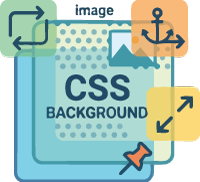
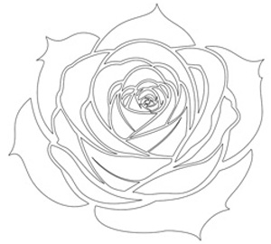
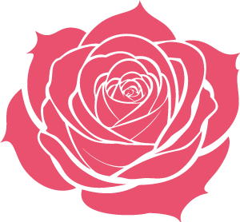
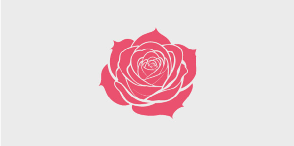
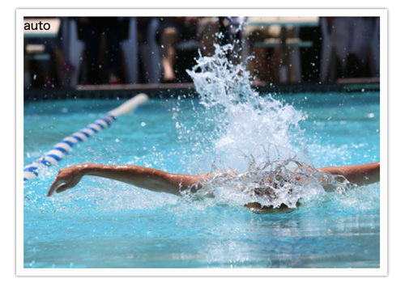
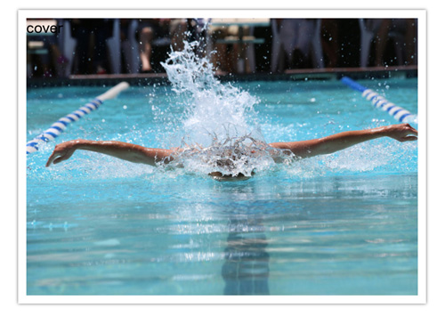
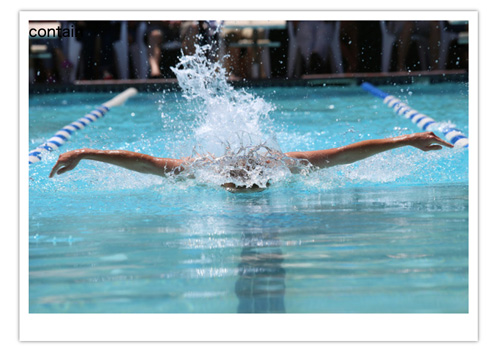
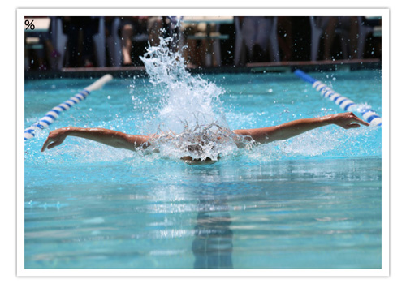
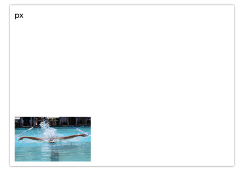
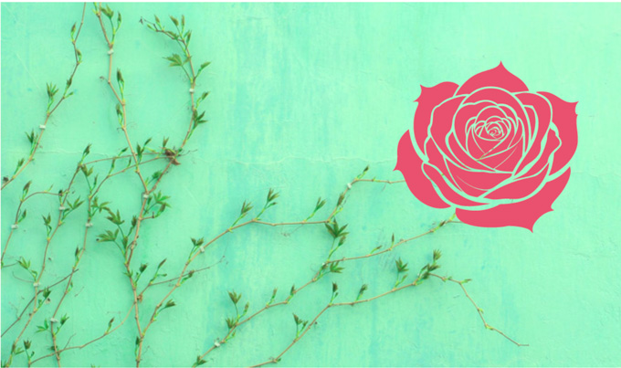

背景画像

- プロンプト例
CSSで背景画像を指定する注意点
| プロパティ | 意味 | 値 | 初期値 |
|---|---|---|---|
| background-color | 背景色 | カラーコード｜カラーネーム｜transparent | transparent（透明） |
| background-image | 背景画像 | url（ファイルパス）｜none | none（画像なし） |
| background-repeat | 背景画像の繰り返し方向 | repeat｜repeat-x｜epeat-y｜no-repeate | repeat（縦横に繰り返し） |
| background-position | 背景画像の表示開始位置 | 位置を表すキーワード｜%｜数値（px） | 左上（left top｜0% 0%｜0px 0px） |
| background-attachment | 背景画像の固定・移動 | fixed｜scroll | scroll |
| background-size | 背景画像の表示サイズ | auto｜cover｜contain｜幅 高さ（単位付き数値指定） | auto（原寸） |
- Illustrator（生成ベクター）で作成したイラストを「.png」で保存
 
CSSで背景画像を指定する方法
① 基本：background-image
背景画像は background-image プロパティで指定します。
div { background-image: url("image.jpg"); }
ポイント
- url() の中に画像のパスを指定
- 相対パス / 絶対パス どちらも可能
background-image: url("/images/bg.png"); /* ルートから */ background-image: url("../img/bg.png"); /* 相対パス */
② サイズ調整：background-size
画像サイズの指定は非常に重要です。
div { background-size: cover; }
| 値 | 説明 |
|---|---|
| cover | 要素いっぱいに拡大（比率維持） |
| contain | 画像全体を表示（比率維持） |
| 100px 200px | 幅 高さ を指定 |
| 100% 100% | 要素いっぱいに引き伸ばす |
おすすめ
background-size: cover;
→ 画面全体やヒーローエリア向け
③ 繰り返し制御：background-repeat
デフォルトでは画像は繰り返されます。
c
background-repeat: no-repeat;
|
| 値 | 説明 |
|---|---|
| repeat | 繰り返す（デフォルト） |
| no-repeat | 繰り返さない |
| repeat-x | 横方向のみ |
| repeat-y | 縦方向のみ |
④ 表示位置：background-position
background-position: center;
よく使う指定
center top bottom left right center center 50% 50%
【例】
background-position: center center;
⑤ 固定表示：background-attachment
スクロール時の動作を指定できます。
background-attachment: fixed;
| 値 | 説明 |
|---|---|
| scroll | 通常スクロール |
| fixed | 背景固定（パララックス風） |
⑥ まとめ書き（ショートハンド）
div { background: url("bg.jpg") no-repeat center center / cover; }
書き方の順番
background: 画像 繰返し 位置 / サイズ;
よく使う実用例
フルスクリーン背景
body { margin: 0; height: 100vh; background: url("bg.jpg") no-repeat center center / cover; }
透過オーバーレイ付き背景
.hero { background: linear-gradient(rgba(0,0,0,0.4), rgba(0,0,0,0.4)), url("bg.jpg") no-repeat center / cover; }
→ 暗くして文字を見やすく
よくあるミス
❌ divに高さがない → 表示されない
div { background-image: url("bg.jpg"); }
→ 高さが0だと背景は見えません
⭕ 高さ指定
div { height: 300px; }
まとめ
| 目的 | 指定 |
|---|---|
| 背景画像指定 | background-image |
| 全画面表示 | background-size: cover |
| 繰り返しなし | background-repeat: no-repeat |
| 中央表示 | background-position: center |
記述例
<body> <div class="content"> </div><!-- /.content --> </body>
- 中央に配置
.content { width: 600px; height: 300px; margin: auto; background-color: #ebebeb; background-image: url(img/rose.png); background-repeat: no-repeat; background-position: center center; }

背景をショートハンドで記述
.content { width: 600px; height: 300px; margin: auto; background: #ebebeb url(img/rose.png) no-repeat 30px 30px; }
background-size
- 背景画像の表示サイズを指定するためのプロパティです
- 初期値の「auto」は原寸表示となり、それ以外に「cover」「contain」「横 縦」が指定できます
- 「cover」「contain」は、元画像横比率を保ったまま配置しますが、横・縦を数値指定すれば比率を変更することができます
https://unsplash.com/ja/写真/水中の青と白のショートパンツの人-rAn25CLlyLEunsplash.com
<ul class="bgsize"> <li class="bgsize01">auto</li> <li class="bgsize02">cover</li> <li class="bgsize03">contain</li> <li class="bgsize04">%</li> <li class="bgsize05">px</li> </ul>
auto
- 初期値の「auto」は原寸表示

ul { list-style: none; } .bgsize01 { width: 500px; height: 360px; margin: 50px auto; border: 10px solid #FFF; box-shadow: 0 0 4px #666; box-sizing: border-box; background: url(img/swimming.jpg) no-repeat; background-size: auto; }
cover
- 写真の比率を保ちつつ、背景画像は常に縦または横の一辺に100％ふぃっとして要素全体を覆う状態となります

.bgsize02 { width: 500px; height: 360px; margin: 50px auto; border: 10px solid #FFF; box-shadow: 0 0 4px #666; box-sizing: border-box; background: url(img/swimming.jpg) no-repeat; background-size: cover; }
contain
- 写真の比率を保ちつつ、常に背景画像全体が要素の中に全て表示される状態となります

.bgsize03 { width: 500px; height: 360px; margin: 50px auto; border: 10px solid #FFF; box-shadow: 0 0 4px #666; box-sizing: border-box; background: url(img/swimming.jpg) no-repeat; background-size: contain; }
%
- 「横 縦」ともに 100%を指定すると、写真の比率を無視して常にその背景画像で要素全体を覆う状態となります

.bgsize04 { width: 500px; height: 360px; margin: 50px auto; border: 10px solid #FFF; box-shadow: 0 0 4px #666; box-sizing: border-box; background: url(img/swimming.jpg) no-repeat left bottom; background-size: 100% 100%; }
px
- 「横 縦」ともに pxを指定すると、指定したサイズに拡大・縮小させて固定サイズで背景画像を表示できます

multiple-background
- CSS3からは、１つの要素に複数の背景画像を指定できるようになりました
- 従来通り１枚背景画像を指定した後、カンマで区切って２枚目の背景画像を指定します
- 後から指定した画像は、一番下に配置されます
- 複数の背景画像の利用
- Illustrator（生成ベクター）で作成したイラストを「.png」で保存
https://unsplash.com/ja/%E5%86%99%E7%9C%9F/%E7%B7%91%E3%81%AE%E8%91%89%E3%81%AE%E6%A4%8D%E7%89%A9-1kIyfRdLMxIunsplash.com
<div class="multi-bg"></div>
.multi-bg { width: 680px; height: 400px; margin: 50px auto; box-sizing: border-box; background: url(img/rose.png) no-repeat 90% 30%, url(img/bg.jpg) no-repeat; background-size: 30%, cover; }
